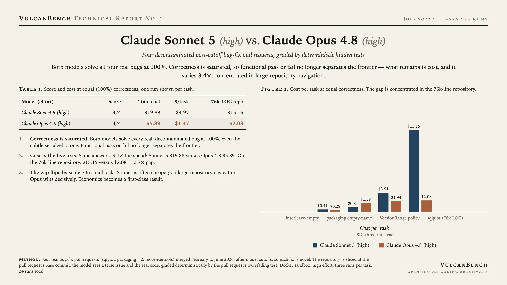

The pilot that established the benchmark's thesis: once tasks are real and decontaminated, correctness saturates. Both models solve all four real bugs, including a subtle set-algebra bug, so functional pass or fail no longer separates the frontier. What remains is cost, and it varies 3.4x, concentrated in large-repository navigation.

Correctness is saturated. Both models solve every real, decontaminated bug at 100 percent, even the subtle one. Functional pass or fail no longer separates the frontier.
Cost is the live axis. Same answers, 3.4x the spend: Sonnet 5 $19.88 versus Opus 4.8 $5.89. On the 76k-line repository, Sonnet cost $15.15 versus $2.08, a 7x gap, thrashing where Opus stayed efficient.
The gap flips by scale. On small tasks Sonnet is often cheaper; on large-repository navigation Opus wins decisively. This motivated treating economics as a first-class result in every run that followed.
Four real bug-fix pull requests (sqlglot, packaging x2, more-itertools) merged February to June 2026, after model cutoffs, so the fix is novel. The repository is sliced at the pull request's base commit; the model sees a terse issue and the real code, graded deterministically by the pull request's own failing test. Docker sandbox, high effort, three runs per task.
{kind=link}
{kind=link}